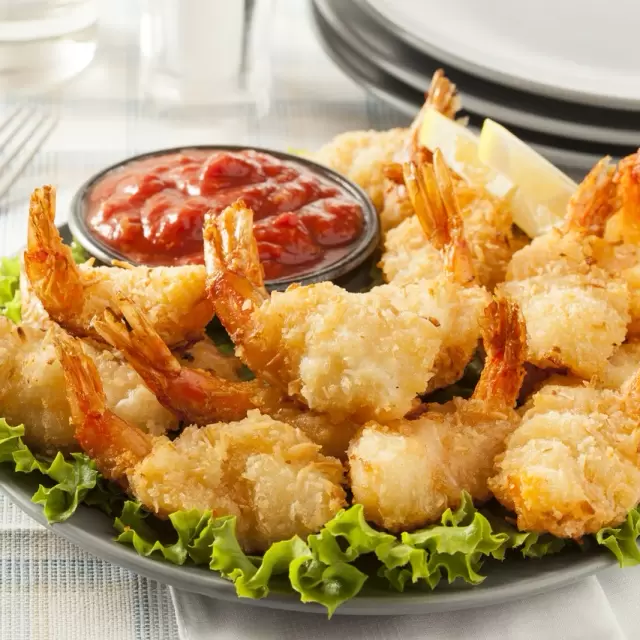
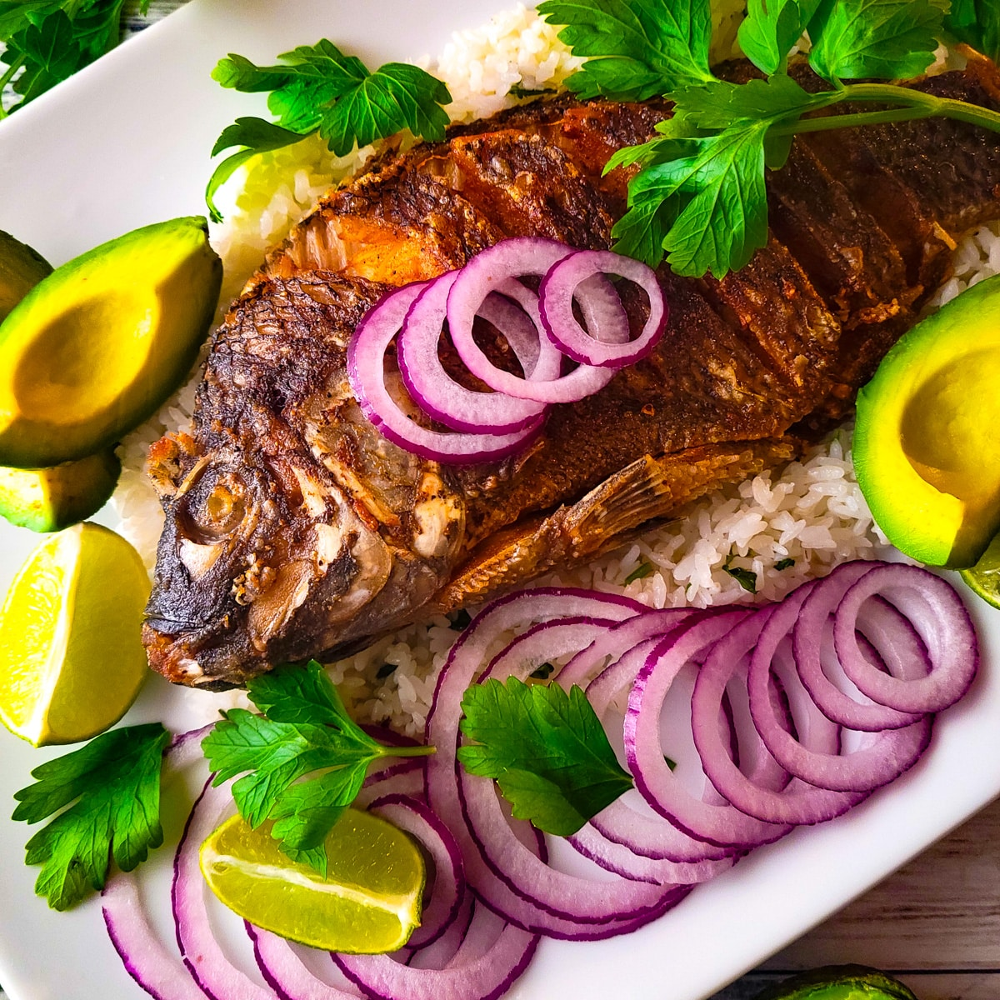
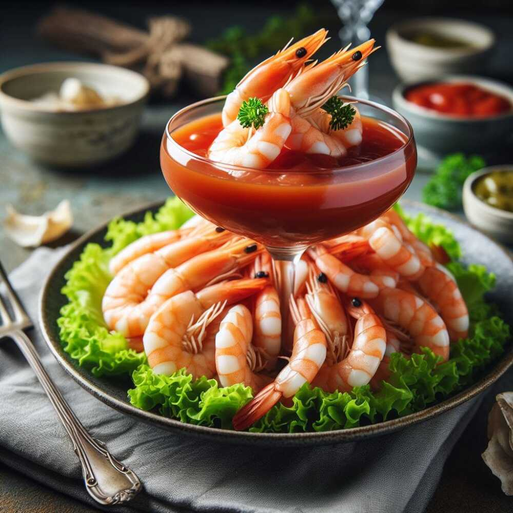

Camarones
Disfruta de nuestros camarones frescos, ideales para cualquier platillo.

Mojarras
Las mojarras más frescas del mercado, perfectas para los amantes de los sabores del mar.

Pescado Empanizado
Delicioso pescado empanizado, ideal para cocinar de diversas maneras.

Coctel De Camarones
"¡Frescura y sabor en cada bocado, disfruta nuestro cóctel de camarones!"